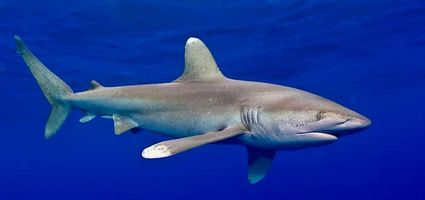

Estos animales tienen mala reputación, pero lo cierto es que los ataques de tiburones a humanos no son tan habituales ni letales como otras...
Unos ocho tiburones martillo nadan cerca de bañistas en una playa de Alabama. Todo el mundo corrió para ponerse a salvo.
El pasado 8 de junio, un joven de 23 años falleció en el Mar Rojo, en una playa de Egipto, tras ser devorado por un tiburón.
Gracias a horas de grabación en 26 playas, investigadores de la Universidad Estatal de California concluyeron que los tiburones blancos no...